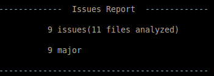

Usage
With the SonarLint executable in the PATH, simply run on the base directory of your project:sonarlint
For Windows:
sonarlint.bat
SonarLint will produce an HTML issues report and will show a short summary in the console:

SonarLint CLI arguments
You can list the accepted arguments with
sonarlint -h
Example
--src- refers to the directory containing the source code in your project
sonarlint --src=my_sources